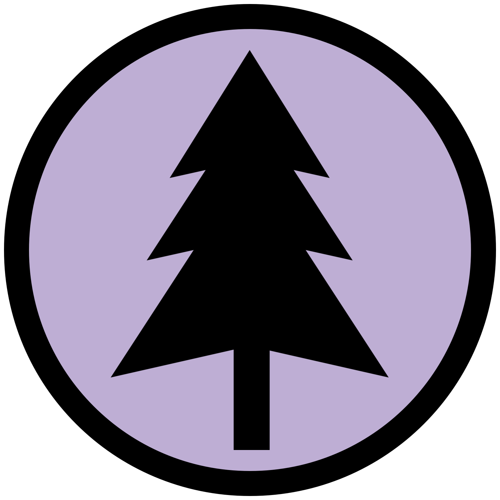

The Effects of Climate Change on the Treeline of Denali National Park and Preserve
Caring About Climate Change
Scientists describe potential future climate through emissions
scenarios, storylines that represent different social, economic,
technological, and environmental situations. These scenarios
depict greenhouse gas emissions that range from low to high
intensity. The characteristics of the described societies
determine the effects on climate over the next century.
Temperature Change
Past
Present
Future
1910-1919
2000-2009
2090-2099
Temperatures in Alaska have increased 2° C to 4° C in the last several decades.
Population
Energy Tech
Continuously increasing until mid-century decline
Efficient tech brings balanced fuel consumption
Population
Energy Tech
Continuously increasing
Slow tech development maintains reliance on fossil fuels
Population
Energy Tech
Continuously increasing until mid-century decline
Clean, sustainable tech makes us less reliant on fossil fuels
How We Do Research
Biogeography
Biogeographers use many tools, software, and methodologies to
address scientific research questions. Specifically, as a
discipline, biogeographers study the spatial distribution of
plants and animals in the past, present, and modelled future.
For example, why do we find mostly white and black spruce trees
in Denali and not as many deciduous tree species found within
the park?
Remote Sensing
One way to assess the change in the spatial distribution of
woody vegetation, like trees, through time, is to examine old
black and white aerial photography and compare the photography
to contemporary satellite imagery. The black and white remote
sensed imagery allows researchers to identify locations within
Denali where there were no trees or few trees in the past.
Locations of newly established trees or an increase in density
of trees within the forest can be identified after an
examination of the satellite imagery.
GIS and Spatial Analysis
After identifying land cover classes in the black and white
imagery and the satellite imagery, products from a digital
elevation model (DEM), like slope angle and slope aspect, aid
us in determining which topographic factors might influence
where trees do and do not establish across the landscape. For
instance, there is commonly more tree establishment on
south-facing slope aspects in the Northern Hemisphere because
these slope aspects are warmer and drier than north-facing
slope aspects. The next time you travel by bus through the
park, see if you can identify which slopes are north vs.
south-facing slope aspects based on where you see trees.
What We See
Research, including tree coring and GIS analysis,
is conducted for and at various field sites. Click
on a site to look at example aerial photographs and
satellite images used in the GIS analysis.
Field Sites
Cabin Divide – This study area is located along the Toklat River

East Fork – This study area is located along the East Fork Toklat River
Healy – This study area is located near the National Park headquarters